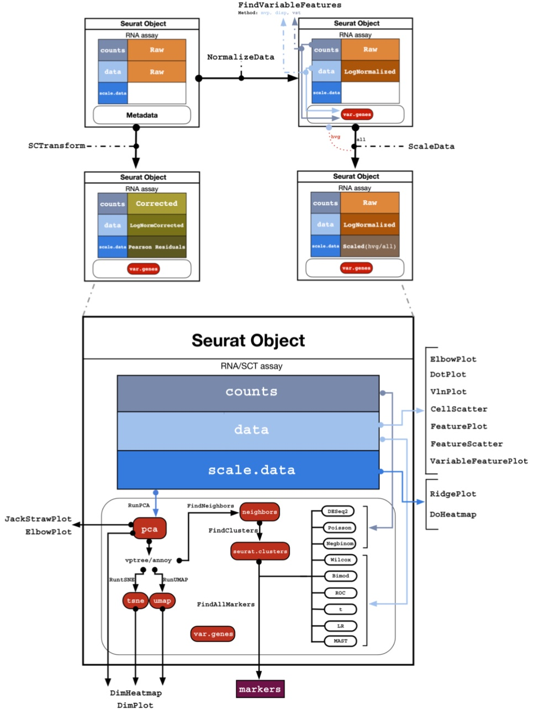

download.file("https://zenodo.org/records/11519797/files/Data.zip?download=1", destfile = "Data.zip")ABC.11: Introduction to Seurat and scRNA-seq preprocessing
scrna
seurat
R
learn about seurat object structure and preprocessing of scrnaSeq data
In this tutorial, we use of the Seurat package for single-cell RNA sequencing (scRNA-seq) data analysis. We cover
- Data Structure: Loading and exploring the scRNA-seq data, with a focus on the Seurat object structure.
- Preprocessing: Filtering low-quality cells and genes, Normalizing the data, identifying highly variable features, and scaling the data.
- Clustering: Performing dimensionality reduction (PCA), finding clusters, and visualizing the results using UMAP
This is just a small workflow to get you started with Seurat!
Warning
You should be able to run the tutorial using these three packages: tidyverse, Seurat, patchwork
Download the data ad unzip it
system("unzip Data.zip && rm -rf Data.zip __MACOSX")Load the necessary libraries and read in the data matrix
library(tidyverse)
library(Seurat)
library(patchwork)
sample <- Read10X(data.dir = "Data/cellranger_sample2/outs/filtered_feature_bc_matrix/")── Attaching core tidyverse packages ──────────────────────────────────────────────────────────────── tidyverse 2.0.0 ──
✔ dplyr 1.1.4 ✔ readr 2.1.5
✔ forcats 1.0.0 ✔ stringr 1.5.1
✔ ggplot2 3.5.1 ✔ tibble 3.2.1
✔ lubridate 1.9.4 ✔ tidyr 1.3.1
✔ purrr 1.0.2
── Conflicts ────────────────────────────────────────────────────────────────────────────────── tidyverse_conflicts() ──
✖ dplyr::filter() masks stats::filter()
✖ dplyr::lag() masks stats::lag()
ℹ Use the conflicted package (<http://conflicted.r-lib.org/>) to force all conflicts to become errors
Loading required package: SeuratObject
Loading required package: sp
‘SeuratObject’ was built under R 4.4.1 but the current version is
4.4.2; it is recomended that you reinstall ‘SeuratObject’ as the ABI
for R may have changed
Attaching package: ‘SeuratObject’
The following objects are masked from ‘package:base’:
intersect, t
The data is now made into a Seurat Object. The count matrix is the one we just loaded, and we give the data a project name, which is the biological process we are studying. It can be some other name of course.
sample <- CreateSeuratObject(counts = sample, project = "spermatogenesis")The seurat object
The Seurat object is a list that contains all the information and calculated results about the single-cell experiment. It contains the following slots:
slotNames(sample)- 'assays'
- 'meta.data'
- 'active.assay'
- 'active.ident'
- 'graphs'
- 'neighbors'
- 'reductions'
- 'images'
- 'project.name'
- 'misc'
- 'version'
- 'commands'
- 'tools'
| Slot | Function |
|---|---|
assays |
A list of assays within this object, such as RNAseq |
meta.data |
Contains cell-level meta data |
active.assay |
Name of active, or default, assay |
active.ident |
Identity classes for the current object |
reductions |
A list of DimReduc objects, like PCA or UMAP |
project.name |
User-defined project name (optional) |
You can always look at any slot using the @ operator. For example, look at what assays are in the object:
sample@assays$RNA
Assay (v5) data with 36601 features for 8583 cells
First 10 features:
MIR1302-2HG, FAM138A, OR4F5, AL627309.1, AL627309.3, AL627309.2,
AL627309.5, AL627309.4, AP006222.2, AL732372.1
Layers:
counts There is so far only one assay, with the name RNA. This is the default assay at the beginning of an analysys, and it contains the count matrix only at this time. Each matrix contained in the assay is called a Layer, and you can see there is only counts.
Other layers (matrices) that are added during an analysis are in the table below. An assay can also contain meta.features, which is a metadata table related to each gene (e.g. gene symbols, biotypes, gene ontology, …).
sample@assays$RNAAssay (v5) data with 36601 features for 8583 cells
First 10 features:
MIR1302-2HG, FAM138A, OR4F5, AL627309.1, AL627309.3, AL627309.2,
AL627309.5, AL627309.4, AP006222.2, AL732372.1
Layers:
counts | Layer | Function |
|---|---|
counts |
Stores unnormalized data such as raw counts or TPMs |
data |
Normalized data matrix |
scale.data |
Scaled data matrix |
meta.features |
Feature-level meta data |
You can use the command below to access a specific layer inside the assay which is currently active in the dataset.
GetAssayData(object = sample, layer ="counts")[1:10,1:10] [[ suppressing 10 column names ‘AAACCTGAGATCCTGT-1’, ‘AAACCTGAGCCTATGT-1’, ‘AAACCTGAGCTTTGGT-1’ ... ]]
10 x 10 sparse Matrix of class "dgCMatrix"
MIR1302-2HG . . . . . . . . . .
FAM138A . . . . . . . . . .
OR4F5 . . . . . . . . . .
AL627309.1 . . . . . . 1 . . .
AL627309.3 . . . . . . . . . .
AL627309.2 . . . . . . . . . .
AL627309.5 . . . . . . . . . .
AL627309.4 . . . . . . . . . .
AP006222.2 . . . . . . . . . .
AL732372.1 . . . . . . . . . .To see the assay currently active (which means used in the analysis), you can access the slot active.assay:
sample@active.assay
'RNA'
Tip
Usually, the default assay changes automatically after performing a normalization, so you do not need to do things manually like this. But it is good to know how to access the slots in the Seurat object to verify the data used.
Metadata
Another important assay is the meta.data slot, which contains cell-level metadata. This is where you can store information about each cell, such as cell type, cell cycle phase, or any other information you have about the cells. For example, we add below the percentage of mitochondrial genes in each cell. This is a common quality control metric, as high percentages of mitochondrial genes can indicate poor-quality cells.
sample[["percent.mt"]] <- PercentageFeatureSet(sample, pattern = "^MT-")Again, you can access the metadata using the @ operator:
head(sample@meta.data)| orig.ident | nCount_RNA | nFeature_RNA | percent.mt | |
|---|---|---|---|---|
| <fct> | <dbl> | <int> | <dbl> | |
| AAACCTGAGATCCTGT-1 | spermatogenesis | 694 | 473 | 5.04322767 |
| AAACCTGAGCCTATGT-1 | spermatogenesis | 6868 | 2016 | 0.04368084 |
| AAACCTGAGCTTTGGT-1 | spermatogenesis | 9188 | 3670 | 2.18763605 |
| AAACCTGAGGATGGTC-1 | spermatogenesis | 4021 | 2175 | 0.00000000 |
| AAACCTGAGTACGACG-1 | spermatogenesis | 3237 | 1622 | 1.54464010 |
| AAACCTGAGTACGCCC-1 | spermatogenesis | 10213 | 3253 | 0.29374327 |
Filtering
We filter out cells with low quality, such as cells with low gene counts or high mitochondrial gene content.
To have an idea of the distribution of those quality measures in each cell, we can plot them using the VlnPlot function. This function creates violin plots of the distribution of a given feature (e.g. gene counts, mitochondrial gene content) across all cells.
options(repr.plot.width = 12, repr.plot.height=6)
VlnPlot(sample,
features = c("nFeature_RNA", "nCount_RNA", "percent.mt"),
ncol = 3,
alpha = .25)Warning message:
“Default search for "data" layer in "RNA" assay yielded no results; utilizing "counts" layer instead.”Note how there are some cells with very few features (detected genes with at least one transcript) and very few counts (total transcripts associated to a gene). These cells are likely to be low-quality, or empty droplets with contamination, and should be removed from the analysis. The same for the cells with too many genes and transcripts, which are likely to be doublets (two cells captured in the same droplet).
Another useful plot is the one giving the relationship between number of transcripts and features in each cell. usually, those two measures grow together. If not, it can be a sign of low-quality cells. We can also notice a few outliers with huge amount of transcripts, but not always as many features. These are likely to be doublets.
FeatureScatter(sample, feature1 = "nCount_RNA", feature2 = "nFeature_RNA") Now we can choose the thresholds for filtering. We will remove cells with less than 2000 genes and more than 6000 genes, counts below 5000 and above 30000, and more than 10% mitochondrial genes.
MIN_COUNT = 5000 #minimum number of transcripts per cell
MAX_COUNT = 30000 #maximum number of transcripts per cell
MIN_GENES = 2000 #minimum number of genes per cell
MAX_GENES = 6000 #maximum number of genes per cell
MAX_MITO = 10 #mitocondrial percentage treshold)
sample <- subset( sample,
subset = nFeature_RNA > MIN_GENES &
nFeature_RNA < MAX_GENES &
nCount_RNA > MIN_COUNT &
nCount_RNA < MAX_COUNT &
percent.mt < MAX_MITO )Now the violin plot looks more uniform without a huge bottom peak, which is a good sign.
VlnPlot(sample, features = c("nFeature_RNA", "nCount_RNA", "percent.mt"), ncol = 3)
FeatureScatter(sample, feature1 = "nCount_RNA", feature2 = "nFeature_RNA") Warning message:
“Default search for "data" layer in "RNA" assay yielded no results; utilizing "counts" layer instead.”Normalization I
Normalization is the process of removing technical biases from the data. The most common normalization method is the LogNormalize method, which normalizes the data by the total expression, multiplies by a scale factor (10,000 by default), and log-transforms the result. This is done by NormalizeData. Usually the data is scaled using ScaleData to have a mean of 0 and a variance of 1.
sample <- NormalizeData(sample, normalization.method = "LogNormalize")
sample <- ScaleData(sample)Normalizing layer: counts
Centering and scaling data matrix
Now look at the RNA assay again. You can see that - data layer has been added, which contains the normalized data - scale.data is the data layer scaled with ScaleData
sample@assays$RNA
Assay (v5) data with 36601 features for 3883 cells
First 10 features:
MIR1302-2HG, FAM138A, OR4F5, AL627309.1, AL627309.3, AL627309.2,
AL627309.5, AL627309.4, AP006222.2, AL732372.1
Layers:
counts, data, scale.data
Tip
Why do you have default assays and not default layers? When you choose a specific assay, the various algorithms in Seurat will automatically choose the correct layer in the assay. If there is no layer with the correct data, Seurat will throw an error. For example PCA will not work if you do not have a scale.data layer in the assay. All those details are in general taken care of automatically, but you can always have ?@fig-object below as a reference for all the various assays and layers, and to which Seurat functions they are used.

PCA and UMAP visualizations
Now we can plot a dimensionality reduction of our data. Usually, you look for the most variable genes, which are the most meaningful on a biological level. This is done with the FindVariableFeatures function.
What does it do? This function calculates the mean and dispersion of each gene, and then selects the most variable genes based on a threshold. The default is to select the top 2000 most variable genes.
sample <- FindVariableFeatures(sample, nfeatures = 2000)Finding variable features for layer counts
If you look at the assay, you can notice a small change, where it now shows the top variable features instead of the first ten in the expression matrix
sample@assays$RNAAssay (v5) data with 36601 features for 3883 cells
Top 10 variable features:
PTGDS, ACTA2, TMSB4X, TAGLN, B2M, S100A6, MYL9, MGP, DCN, KRT17
Layers:
counts, data, scale.data You can now run and print the PCA of the data, which will be based on the variable features. The PCA is a way to reduce the dimensionality of the data, and it is useful to visualize the data in 2D or 3D. The PCA is calculated using the RunPCA function.
Tip
The first components are the most relevant to the data, and the PCA function prints the genes that influence the most each component. This is useful to understand what the components represent. For example, if one component has a long list of mitochondrial genes, it is likely to represent the mitochondrial content of the cells, which you might want to remove in the future analysis where it could cover for other biological factors that are relevant to you.
sample <- RunPCA(sample, features = VariableFeatures(object = sample))
FeaturePlot(sample, reduction = 'pca', features = "nCount_RNA")PC_ 1
Positive: HMGB4, GTSF1L, ACTL7A, TSSK2, GAPDHS, SMCP, FHL5, NUPR2, SPTY2D1OS, CAPZA3
H1FNT, C10orf82, FAM71E1, RNF151, C16orf82, ACTL9, IQCF1, C2orf88, FAM71F1, SPATA19
CCDC196, GNG2, C9orf24, SPERT, CCDC91, CLPB, TSSK1B, TMCO2, LELP1, AC002463.1
Negative: HSP90AA1, NPM1, COX7A2L, MT-CO1, MT-ND2, PTGES3, MT-CO3, MT-ND1, MT-CO2, RPS17
PARK7, MT-ATP6, CALM2, GABARAPL2, MT-ND4, BANF1, TRMT112, H2AFZ, CKS2, SNRPD1
FTH1, RPS12, RPL21, HNRNPA3, EIF5, RBX1, MTX2, RPL18, SBNO1, BUD23
PC_ 2
Positive: FTL, SOD1, NDUFA13, MIF, S100A11, S100A10, RPL10, FBL, ANXA2, CNN1
RPS4Y1, LDHB, RPL36A, RPS21, PRDX1, GLUL, RBM3, RPL18A, CIRBP, RPL39
RPS4X, EIF4E, SLC25A5, GPI, SLC25A6, RPL21, RPLP1, HSPB1, NME2, GSTP1
Negative: LDHC, SPINK2, TMEM225B, REXO5, CCDC110, ZPBP2, CCT6B, AL133499.1, ANKRD7, PPP3R2
DYDC1, CETN1, PTTG1, SPAG6, CCDC42, CLGN, LINC01016, DBF4, PBK, ETFRF1
MCHR2-AS1, TBPL1, SPATA22, PPP1R1C, CT66, C15orf61, TMPRSS12, KPNA5, AC002467.1, ZC2HC1C
PC_ 3
Positive: ENG, BST2, OSR2, MGP, FOS, MYL9, JUNB, TSHZ2, TIMP3, NUPR1
CAV1, SFRP4, VIM, LGALS1, CALD1, IFI6, APOD, SMOC2, BGN, ZFP36
TAGLN, FBLN5, SH3BGRL, SPARC, PRDX2, DPEP1, MYH11, IGFBP7, JUN, TCEAL3
Negative: SMC1B, DPEP3, LY6K, CKS2, CHIC2, CENPH, SPINT2, ZCWPW1, SYCP3, TOP2A
TEX101, DNMT1, PRSS21, HENMT1, GINS2, BUD23, SMC3, TPTE, HMGB2, ORC6
MAJIN, SQLE, SMC4, VCX, FABP5, DMRTC2, BTG3, UNK, TEX12, MIS18A
PC_ 4
Positive: PRM1, AC016747.1, LINC01921, PRM2, LRRD1, TNP2, TNP1, LRRC8C-DT, FAM216A, GIHCG
C5orf58, EIF5AL1, TMED10, AC073111.1, TSSK6, CCDC179, NUF2, RANGAP1, AC079385.2, LINC01206
PHOSPHO1, ESS2, LDHAL6B, CETN3, TDRG1, CAP1, AL354707.1, OTUB2, SPATA8, CUTC
Negative: CMC1, HMGN1, TJP3, FAM24A, C4orf17, TFDP2, DPP10-AS3, AC022784.5, ABRA, TPRG1
PRSS55, C17orf98, ATP6V1E2, LINC02032, LRRC3B, AL450306.1, TMEM243, LYZL6, GPR85, CLDND2
XKR3, LYZL1, SPACA1, LRRC39, LINC01988, LYZL4, AP002528.1, AFG1L, LYZL2, C17orf50
PC_ 5
Positive: C5orf47, TEX101, ARL6IP1, SYCP1, SELENOT, TOP2A, HLA-B, LINC01120, MAJIN, HORMAD1
TDRG1, ANKRD31, TPTE, LY6K, XKR9, HSP90B1, LINC00668, TEX12, DMC1, AC044839.1
PRSS21, DMRTC2, SPO11, SYCP3, SCML1, C1orf146, RAD51AP2, AL138889.1, C5orf58, AC240274.1
Negative: ALKAL2, ANKRD37, GYG1, TUBA1B, CSTF1, RHOXF1, AURKA, KRT18, SOX4, RGCC
PAFAH1B3, RABIF, EGFL7, LINC01511, SMS, AL445985.2, HMGA1, RABGGTA, CAVIN3, AC004817.2
TMEM14A, ISOC2, TCF3, SIX1, CDCA7L, PPP1CA, L1TD1, RAC3, KLHL23, ASB9
The plot above is coloured by the number of transcripts in each cell. Each dot is a cell. You can see that the PCA separates the cells by the number of transcripts - This is because the number of transcripts is a technical factor, and the simple normalization we did before probably did not remove for its beffect on the data.
Another thing to take into account is that the PCA is not the best way to visualize the data, as it is a linear transformation of the data. The UMAP is a non-linear transformation that is more suitable for single-cell data. You can run the UMAP using the RunUMAP function. But before, look at how much variance there is in each PCA component (plot below), and there choose a threshold where the value is low. Usually 10 to 15 is just fine.
ElbowPlot(sample)Then run the UMAP selecting the first ten dimensions of the PCA
sample <- RunUMAP(sample, dims = 1:10)Warning message:
“The default method for RunUMAP has changed from calling Python UMAP via reticulate to the R-native UWOT using the cosine metric
To use Python UMAP via reticulate, set umap.method to 'umap-learn' and metric to 'correlation'
This message will be shown once per session”
14:58:33 UMAP embedding parameters a = 0.9922 b = 1.112
14:58:33 Read 3883 rows and found 10 numeric columns
14:58:33 Using Annoy for neighbor search, n_neighbors = 30
14:58:33 Building Annoy index with metric = cosine, n_trees = 50
0% 10 20 30 40 50 60 70 80 90 100%
[----|----|----|----|----|----|----|----|----|----|
*
*
*
*
*
*
*
*
*
*
*
*
*
*
*
*
*
*
*
*
*
*
*
*
*
*
*
*
*
*
*
*
*
*
*
*
*
*
*
*
*
*
*
*
*
*
*
*
*
*
|
14:58:33 Writing NN index file to temp file /tmp/RtmphwjaOt/file1efcb5fdb2ff7
14:58:33 Searching Annoy index using 1 thread, search_k = 3000
14:58:34 Annoy recall = 100%
14:58:34 Commencing smooth kNN distance calibration using 1 thread
with target n_neighbors = 30
14:58:35 Initializing from normalized Laplacian + noise (using RSpectra)
14:58:35 Commencing optimization for 500 epochs, with 148538 positive edges
14:58:38 Optimization finished
Pretty! We can visualize some know markers, AKAP4 for maturing spermatozoa and PIWIL1 for meiosis. You can see that the cells are separated by the expression of these genes. This is a good sign that the clustering will work well, and that the UMAP represents biological variation. Since UMAP is based on PCA, the PCA was also a good representation of the data and not only biased by the number of transcripts as technical factor.
FeaturePlot(sample, reduction = "umap", features = c("AKAP4","PIWIL1"))Normalization II
Now, one might want a better normalization method. The one we used before is very simple and does not take into account the technical factors that can be present in the data. For example, we might have found out that the PCA was completely biased by cell cycle markers, and we want to remove this bias. This is done by the SCTransform function, which is a more advanced normalization method that takes into account technical factors in the data. Below we do not insert technical factors, but you can do it by adding them in the vars.to.regress argument. Try to remove the effect of mitochondrial content using vars.to.regress = "percent.mito" in the command below (we noticed after all some mitochondrial genes in the first PCA component). One can add also multiple factors, like vars.to.regress = c("percent.mito", "cell.cycle").
sample <- SCTransform(sample)Running SCTransform on assay: RNA
Running SCTransform on layer: counts
vst.flavor='v2' set. Using model with fixed slope and excluding poisson genes.
Variance stabilizing transformation of count matrix of size 26386 by 3883
Model formula is y ~ log_umi
Get Negative Binomial regression parameters per gene
Using 2000 genes, 3883 cells
Found 12 outliers - those will be ignored in fitting/regularization step
Second step: Get residuals using fitted parameters for 26386 genes
Computing corrected count matrix for 26386 genes
Calculating gene attributes
Wall clock passed: Time difference of 48.80969 secs
Determine variable features
Centering data matrix
Set default assay to SCT
Let’s calculate PCA and UMAP again
sample <- RunPCA(sample, features = VariableFeatures(object = sample))PC_ 1
Positive: MT-CO2, MT-ND4, MT-CO1, MT-CO3, MT-CYB, RPL21, PTMA, RPL18A, HIST1H4C, MT-ATP6
MALAT1, MT-ND1, HSP90AA1, RPS2, GAGE2A, SMC3, RPSA, CCNI, RPLP1, BUD23
FTH1, RPL10, DNAJB6, RPS12, RPS19, PRDX1, CIRBP, HMGB1, NCL, RNPS1
Negative: HMGB4, TNP1, PRM1, PRM2, LINC01921, CRISP2, SMCP, LINC00919, GTSF1L, LELP1
RNF151, NUPR2, TSACC, C10orf62, TSSK2, GAPDHS, FAM209A, OAZ3, TEX37, CAPZA3
CMTM2, FAM71A, AC002463.1, CATSPERZ, TEX38, C20orf141, FAM71B, TSPAN16, SH3RF2, IRGC
PC_ 2
Positive: AL133499.1, LDHC, ANKRD7, SPATA8, SPINK2, LYAR, RBAKDN, SPATA22, CCDC42, COPRS
ZMYND10, CAVIN3, CCNA1, GIHCG, PPP3R2, CLGN, GTF2A2, ZPBP2, REXO5, TBPL1
MRPL34, H2AFJ, PTTG1, AC004817.2, TMEM225B, CATSPERZ, UBB, APH1B, COX7A2, CCDC110
Negative: PRM2, PRM1, TNP1, HMGB4, LINC01921, LINC00919, LELP1, GLUL, TEX37, FAM71B
FAM71A, C10orf62, RNF151, OAZ3, HEMGN, C20orf141, NFKBIB, CEP170, PRSS58, TSPAN16
SPATA42, RPL18A, SH3RF2, TEX44, AC002463.1, IQCF2, OTUB2, SPATA3, TSSK6, RPL10
PC_ 3
Positive: PRM1, PRM2, TNP1, TEX101, SYCP3, FMR1NB, LINC01921, LY6K, SMC3, HIST1H4C
SMC1B, C5orf58, DPEP3, HMGB2, SYCP1, HORMAD1, TPTE, HMGB4, TOP2A, CALM2
LINC00919, SPINT2, BUD23, ZCWPW1, TDRG1, TEX12, HSP90AA1, CKS2, MAD2L1, NCL
Negative: RPS4X, VIM, RPL10, MGP, TMSB4X, MYL9, FOS, LGALS1, CALD1, PTGDS
TIMP1, B2M, IFITM3, SPARCL1, OSR2, RPL39, FTL, NUPR1, ENG, BEX3
RPL13A, TPM2, CD63, BST2, DCN, ACTA2, MYL6, CAV1, EEF1A1, JUNB
PC_ 4
Positive: EGFL7, PAFAH1B3, SMS, RHOXF1, CCNI, RPS12, RPSA, SOX4, LYPLA1, GAGE2A
ASB9, TUBA1B, DNAJB6, ZNF428, HMGA1, PPP1CA, C17orf49, YWHAB, RPS2, LINC01511
KRT18, RPS19, AL445985.2, NEIL2, MAGEB2, LIN7B, RNPS1, MAGEA4, TMEM14A, LSM2
Negative: TEX101, MALAT1, CALM2, C5orf58, SYCP3, SELENOT, PTGDS, B2M, MGP, CTSL
SYCP1, LY6K, FOS, MYL9, FHL2, TDRG1, HORMAD1, LGALS1, TPTE, TIMP1
SPARCL1, IFITM3, CALD1, DPEP1, BST2, DCN, ENG, NEAT1, OSR2, NUPR1
PC_ 5
Positive: PRM2, PRM1, TNP1, LINC01921, SPATA8, AL133499.1, MRPL34, GIHCG, LYAR, TNP2
COPRS, TEX37, SPINK2, GLUL, TSSK6, ISOC2, ZMYND10, FAM71B, CAVIN3, RGCC
H2AFZ, AC004817.2, CCNA1, HEMGN, AKAP12, RAN, OTUB2, TEX36-AS1, MT-CO1, ESS2
Negative: SPACA1, EQTN, TJP3, ACRV1, GOLGA6L2, ERICH2, FAM209A, LYZL1, SPACA3, OLAH
FAM209B, HMGN1, LYZL2, ACTRT3, FNDC11, FAM24A, PEX5L-AS2, C17orf98, PRSS55, SPACA7
LYZL6, TEX38, SPACA4, LYZL4, DPEP3, FMR1NB, BRI3, SMC3, TMEM190, C17orf50
ElbowPlot(sample)sample <- RunUMAP(sample, dims = 1:15)14:59:41 UMAP embedding parameters a = 0.9922 b = 1.112
14:59:41 Read 3883 rows and found 15 numeric columns
14:59:41 Using Annoy for neighbor search, n_neighbors = 30
14:59:41 Building Annoy index with metric = cosine, n_trees = 50
0% 10 20 30 40 50 60 70 80 90 100%
[----|----|----|----|----|----|----|----|----|----|
*
*
*
*
*
*
*
*
*
*
*
*
*
*
*
*
*
*
*
*
*
*
*
*
*
*
*
*
*
*
*
*
*
*
*
*
*
*
*
*
*
*
*
*
*
*
*
*
*
*
|
14:59:42 Writing NN index file to temp file /tmp/RtmphwjaOt/file1efcb66a5aeb3
14:59:42 Searching Annoy index using 1 thread, search_k = 3000
14:59:43 Annoy recall = 100%
14:59:44 Commencing smooth kNN distance calibration using 1 thread
with target n_neighbors = 30
14:59:46 Initializing from normalized Laplacian + noise (using RSpectra)
14:59:46 Commencing optimization for 500 epochs, with 147944 positive edges
14:59:49 Optimization finished
here it is. Similar to what we had before (this is very nice and unbiased data)
FeaturePlot(sample, reduction = "umap", features = c("AKAP4","PIWIL1"))Post-normalization Seurat object
Look at the seurat object now. You can see there is a new active assay, called SCT (as in scTransform). This is the new normalization. counts is the count matrix corrected for biases by the SCTransform statistical model, and scale.data is the scaled data. data is the corrected matrix counts, normalized but not scaled.
Note also that PCA and UMAP are saved in the assay.
sampleAn object of class Seurat
62987 features across 3883 samples within 2 assays
Active assay: SCT (26386 features, 3000 variable features)
3 layers present: counts, data, scale.data
1 other assay present: RNA
2 dimensional reductions calculated: pca, umapYou can also use slotNames to see an overview of the slots in the object. Try to look back at ?@fig-object to see how things match.
slotNames(sample@assays$SCT)- 'SCTModel.list'
- 'counts'
- 'data'
- 'scale.data'
- 'assay.orig'
- 'var.features'
- 'meta.features'
- 'misc'
- 'key'
Clustering
Now we go straight into clustering. Now it is very popular to pull cluster labels from large cell atlases, but it is good to know how to do it manually by looking at markers. First of all we calculate cell similarities (neighbors) and a clustering. We choose a small resolution parameters to avoid a too fine-grained clustering inthe tutorial. Your clusters might be looking different than in this tutorial!
sample <- FindNeighbors(sample, dims = 1:15)
sample <- FindClusters(sample, resolution = 0.3)Computing nearest neighbor graph
Computing SNN
Modularity Optimizer version 1.3.0 by Ludo Waltman and Nees Jan van Eck
Number of nodes: 3883
Number of edges: 113438
Running Louvain algorithm...
Maximum modularity in 10 random starts: 0.9486
Number of communities: 11
Elapsed time: 0 secondsNotice how cluster numbers are now assigned to the active.ident assay, unused until now.
sample@active.ident[1:10]- AAACCTGAGCCTATGT-1
- 6
- AAACCTGAGCTTTGGT-1
- 4
- AAACCTGAGTACGCCC-1
- 7
- AAACCTGAGTGAATTG-1
- 5
- AAACCTGCAGAGCCAA-1
- 5
- AAACCTGGTAGGGTAC-1
- 0
- AAACCTGGTCAGAAGC-1
- 9
- AAACCTGGTCGTGGCT-1
- 3
- AAACCTGTCTCTGTCG-1
- 0
- AAACGGGAGATGTGGC-1
- 4
Levels:
- '0'
- '1'
- '2'
- '3'
- '4'
- '5'
- '6'
- '7'
- '8'
- '9'
- '10'
You can plot the clusters as well on UMAP (or PCA)
DimPlot(sample, reduction = 'umap', label=TRUE, label.size = 10)Now let’s look to some broad markers categories for spermatogenesis. This step requires biological knowledge of your data, and you can look at the literature or other resources to find the markers. For example, we can look at markers for spermatogonia, spermatocytes, and spermatids.
cat("Spermatogonia Markers\n")
FeaturePlot(sample, features = c('MKI67','DMRT1','STRA8','ID4'))Spermatogonia Markerscat("Spermatocytes Markers\n")
FeaturePlot(sample, features = c('MEIOB','SYCP1','TEX101','PIWIL1','SPATA16','CLGN'))Spermatocytes Markerscat("Spermatid Markers\n")
FeaturePlot(sample, features = c('PRM1','PRM2','PRM3','AKAP4','SPATA9','SPAM1'))Spermatid Markers
We also look for some somatic markers
cat("Somatic Markers\n")
FeaturePlot(sample, features = c('VIM','CTSL'))Somatic Markers
Tip
Note how the somatic marker CTSL also ends where we might have another cell type. This happens often as there are markers involved in multiple biological processes! This is why it is important to look at multiple markers and not just one.
Renaming clusters
Now, we can choose to rename the clusters to more meaningful names. Simply create a named vector with the old and new names separated by :.
Warning
Fill out the example vector below yourself!
new_names = c(
'0'='clusterA',
'1'='clusterB',
'2'='clusterC')Below, you substitute the cluster names with the new names. You can also use the RenameIdents function to rename the clusters.
sample@meta.data$new_clusters = recode(Idents(sample), !!!new_names)
sample@active.ident = as.factor(sample@meta.data$new_clusters)
names(sample@active.ident) = colnames(sample)Now you are ready to look at your clustering!
DimPlot(sample, reduction = 'umap', label=TRUE, label.size = 10)
Note
Now you are ready to go on with your analysis. You can look at differential expression, cell cycle, and other analyses. Those will come in a second tutorial of the ABC, so keep your eyes on our documentation.
In the meanwhile, you can try further tutorials on the Seurat website, or look at the Seurat vignettes for more advanced analyses.
We at the ABC also work with single cell analysis regularly, so do not hesitate to ask us for help!